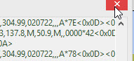
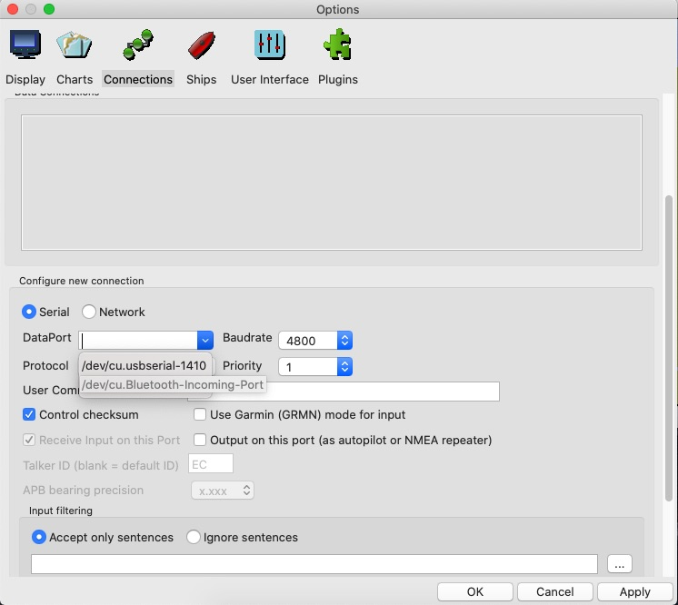

Adding a GPS Device
Many different GPS devices can be used to provide OpenCPN with the boat’s position. For simplicity the Globalsat BU-353S4 GPS is used to demonstrate installing and using a GPS with OpenCPN

Other GPS devices that are available are listed HERE.
The GPS needs line of sight with satellites. You may need to move the GPS until it has a clear view of the sky. On a boat you could find that sufficient signal is received through a fibreglass deck.
Device Drivers
Device drivers for various OS can be downloaded HERE
Windows
Download the installer for the version of Windows you are running.
Install the driver using the installer .exe.
Plug in the GPS. Windows should recognise the device and use the appropriate driver for it.
Options Connections
Add connection
Using the DataPort dropdown select the Prolific USB port.
Scroll up and tick the Show NMEA Debug Window. This is not strictly necessary but gives a good indication of whether the GPS is functioning correctly.

Apply OK
You may need to move the chart a litle but the ship’s position appears.
The NMEA Debug Window can be closed with the Close  button.
The Compass/GPS Status Window shows a green bar  which indicates the strength of the GPS signal.
which indicates the strength of the GPS signal.
The Status Bar shows the ship’s position.
Zooming in  the icon for the ship changes to a boat outline
the icon for the ship changes to a boat outline  . The mouse scroll button can also be used to zoom in/out.
. The mouse scroll button can also be used to zoom in/out.
MacOS
Plug in the GPS.
Options Connections
Add connection
Use Serial

With the DataPort dropdown select the /dev/cu.usbserial-1410 option.

Tick the Show NMEA Debug Window to view the GPS output.
The NMEA Debug Window can be closed with the Close button.
The Compass/GPS Status Window shows a green bar which indicates the strength of the GPS signal.
The Status Bar shows the ship’s position.
Zooming in the icon for the ship changes to a boat outline . The mouse scroll button can also be used to zoom in/out.
Linux
Options Connections
Add connection
Using the serial connection the DataPort dropdown has an entry /dev/ttyUSB0-Prolific ….

Apply and then tick Enable for this connection.
This presents a message about permissions.

Install rule

OK
Follow the advice for restarting OpenCPN.
A rule (symlink) has been created for using the GPS advice.

If you need to remove the GPS and clean up the installation the symlink can be removed using Terminal.

After restarting OpenCPN and editing the DataPort connection to use the symlink opencpn0 the ship’s position appears on the map.
Zoom in and the boat icon appears.